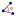
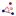

Angle[Vector v1, Vector v2]: Returns the angle between two vectors v1 and v2 (between 0 and 360°) .
Angle[Line g, Line h]: Returns the angle between the direction vectors of two lines g and h (between 0 and 360°) .
Angle[Point A, Point B, Point C]: Returns the angle enclosed by BA and BC (between 0 and 360°), where point B is the apex.
Angle[Point A,
Point B, Angle α]:
Returns the angle of size α drawn from point A with apex
B.
Note: The point Rotate[A, α, B] is created as well.
Angle[Conic]: Returns the angle of twist of a conic section’s major axis (see command Axes) .
Angle[Vector]: Returns the angle between the x-axis and given vector.
Angle[Point]: Returns the angle between the x-axis and the position vector of the given point.
Angle[Number]: Converts the number into an angle (result between 0 and 2pi).
Angle[Polygon]:
Creates all angles of a polygon in mathematically positive orientation (i. e.,
counter clockwise).
Note: If the polygon was created in counter
clockwise orientation, you get the interior angles. If the polygon was created
in clockwise orientation, you get the exterior angles.
Note: Also see tools  Angle and  Angle with Given Size